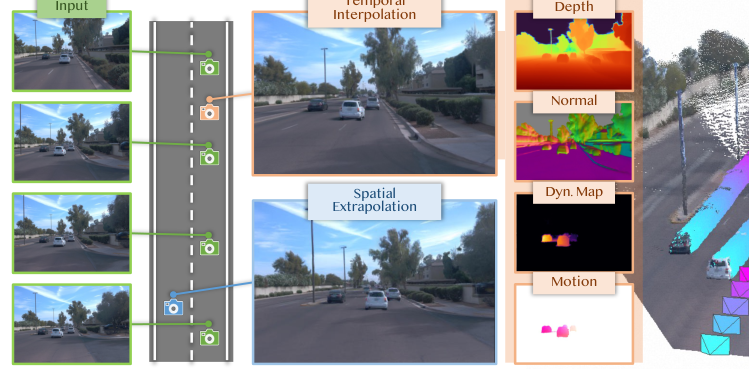
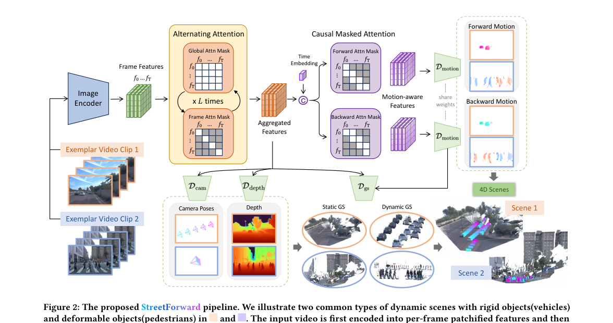
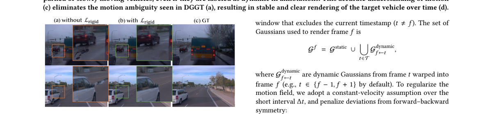
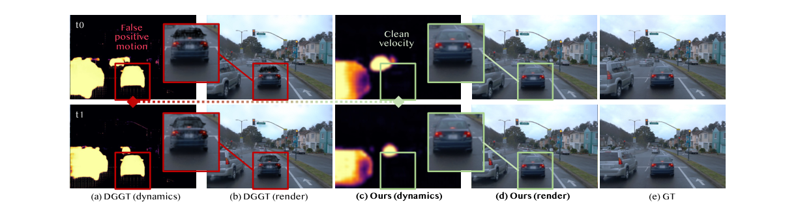
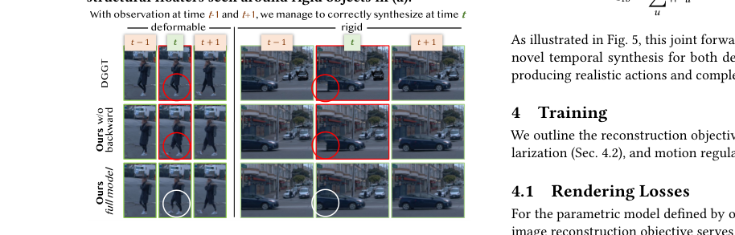

StreetForward：通过前馈因果注意力感知动态街道
简单摘要
自动驾驶里的闭环仿真希望把真实道路数据快速转成可重放、可插值、可从新视角观察的动态三维场景。 传统 NeRF、3DGS、SfM 一类方法通常都需要针对每个场景单独优化，这在自动驾驶里代价太高，因为数据量巨大、场景更新频繁。
StreetForward 的目标是：用前馈推理直接完成动态街景 4D 重建。它同时尽量拿掉动态重建中常见的额外依赖：不依赖 tracker，不依赖 segmentation，也不依赖 LiDAR 或强监督的 4D 标注。

从整体上看，StreetForward 可以分成四步：
- 先用类似 VGGT 的多帧视觉 backbone，从一段视频中提取跨帧聚合特征；
- 从这些特征里解码出相机位姿、深度和每个像素对应的 3D Gaussian；
- 再引入带方向约束的 causal masked attention，让模型明确“从当前帧看下一帧/上一帧”的运动关系；
- 最后解码出每像素速度、动态概率，并通过时空一致性损失把动态 3DGS 训练稳定。
可以把它理解成：先让模型学会“这条街长什么样”，再让模型学会“这条街上的东西怎么动”，最后把这两件事放进同一个 3DGS 表示里统一渲染。

核心创新
这篇论文的创新点可以概括为 3 条：
1）把动态街景 4D 重建做成 feedforward
以前很多方法的瓶颈是“每个场景都要重新优化”，StreetForward 试图把这件事改成“一次前向推理直接出结果”。 这对自动驾驶非常关键，因为自动驾驶数据不是几百个场景，而是海量、持续增长、不断更新的数据流。
2）用因果注意力显式建模时间方向
VGGT 原本更擅长静态多视图几何，它把不同帧的 token 放在一起做注意力，偏向“整体聚合”，但不擅长表达“从帧 A 到帧 B 的方向性运动”。 StreetForward 在其之上加入 causal masked attention，把时间方向显式编码进去，这是整篇方法最关键的一步。
3）把静态和动态统一到同一个 3DGS 框架里
它没有把静态背景建模和动态目标建模拆成两套系统，而是都放到 3D Gaussian Splatting 里：静态高斯长期存在，动态高斯随着速度场跨时间传播。 这种统一表示让训练、推理和渲染链路都更简洁。
技术细节
原论文的 Methodology 分为 3.1–3.4 四个部分。下面我按原始结构完整展开，并尽量用更直白的语言解释这些公式到底在描述什么。
3.1 输入 Token 化（Input Tokenization）
首先，输入视频的每一帧会被 DINO 编码器切成 patch，并得到高层视觉 token；这些 token 再进入 VGGT 风格的 alternating attention，在跨帧和帧内两个尺度上反复聚合信息。
$$z^{(L)}_{I,f,p} \in \mathbb{R}^D$$
$$X \in \mathbb{R}^{BFPD},\quad X[b,f,p,:] = z^{(L)}_{I,f,p}$$
其中 $B$ 是 batch size，$F$ 是帧数，$P$ 是每帧 patch 数，$D$ 是 token 维度。为了做跨帧 attention，作者把 frame 和 patch 两个维度展平：
$$Z = \mathrm{flatten}_{f,p}(X) \in \mathbb{R}^{B(FP)D}$$
这一步相当于先建立一个跨时间、跨视角共享的特征空间，让后面所有几何和运动建模都在这个统一底座上进行。
公式分析：$X \in \mathbb{R}^{BFPD}$ 其实明确了模型最初看到的数据组织方式：它不是“先看一帧再看下一帧”，而是把整个 clip 的 patch token 一起送入后续模块。 当作者写出 $Z = \mathrm{flatten}_{f,p}(X)$ 时，本质上是在把“时间维 + 空间 patch 维”拼成一条更长的 token 序列，让 attention 能直接在多帧 patch 之间建立联系。 这一步的关键含义是：StreetForward 后面所有几何推断，都是建立在一个已经跨帧融合过的表示之上，而不是每帧各自独立预测再硬拼起来。
进一步说，$F\cdot P$ 决定了 cross-frame attention 的有效感受野：如果 patch 数多、帧数也多，那么同一块区域就能在更多时刻里找到对应证据。 这也是为什么作者沿用 VGGT 的 alternating attention 作为骨干——它先把“哪几个 patch 其实在描述同一处结构”这件事学出来，后面的位姿、深度和运动 head 才有稳定输入。
3.2 位姿估计与静态场景重建（Pose Estimation and Static Scene Reconstruction）
从聚合后的 latent token 中，StreetForward 用多个 head 去预测相机参数和静态几何：
- 相机内外参：$K_f, (R_f, t_f)$
- 像素深度：$D_f$
- 每像素对应的 Gaussian 属性：位置、协方差、透明度、颜色
每个像素 $u$ 对应一个 Gaussian：
$$g_f(u) = \lbrace \mu_f(u), \Sigma_f(u), \alpha_f(u), c_f(u) \rbrace$$
它的中心位置通过深度和相机参数反投影得到：
$$\mu_f(u) = R_f^\top \big(K_f^{-1} \tilde u\, D_f(u) - t_f\big), \qquad \tilde u=(u_x,u_y,1)^\top$$
可以把这理解成：先预测“像素离相机有多远”，再把它放回三维空间。
作者并不会把所有 Gaussian 都直接当静态点，而是先用 motion head 给出的动态概率 $s_{f,u}$ 做筛选：
$$\chi_{f,u} = \mathbb{I}[s_{f,u} \le \tau_{dyn}]$$
只有动态概率比较低的点才进入静态高斯集合：
$$G_f^{static} = \lbrace g_f(u): \chi_{f,u} = 1 \rbrace, \qquad G^{static} = \bigcup_{f=1}^F G_f^{static}$$
这样做的好处是，系统会先搭一个相对稳定的“静态骨架”，避免运动目标把背景几何污染掉。
公式分析：$g_f(u)=\lbrace \mu_f(u),\Sigma_f(u),\alpha_f(u),c_f(u) \rbrace$ 说明作者并不是只预测“一个 3D 点”，而是预测一个完整 Gaussian primitive： 中心 $\mu$ 决定它在空间中的位置，协方差 $\Sigma$ 决定它的形状与尺度，透明度 $\alpha$ 决定它对渲染的贡献，颜色 $c$ 决定外观。 换句话说，这个公式把 2D 像素直接提升成了一个可渲染的 3D 表达单元。
而 $\mu_f(u) = R_f^\top (K_f^{-1}\tilde u D_f(u)-t_f)$ 的含义非常几何化：先把像素坐标 $\tilde u$ 用内参矩阵逆映射成相机坐标系方向，再乘深度得到 3D 点，最后利用外参变换到世界坐标系。 所以这不是“网络凭空生成一个 3D 位置”，而是“网络先估计相机和深度，再按经典投影几何把像素反投影回 3D”。这让 StreetForward 的 3DGS 初始化有很强的可解释性。
最后，$\chi_{f,u} = \mathbb{I}[s_{f,u} \le \tau_{dyn}]$ 和 $G^{static} = \bigcup_f G_f^{static}$ 共同表达了一个很重要的建模取向： 作者先把“足够像静态”的高斯从每帧里筛出来，再跨时间并起来形成全局静态集合。这样做相当于先把背景几何做稳，再把复杂的动态部分单独交给 motion 模块处理。 从工程角度看，这一步极大降低了动态区域对背景建模的污染。
3.3 因果动态建模（Causal Dynamics Modeling）
这是整篇文章最核心的部分。作者先给每一帧 token 拼接时间编码：
$$\tilde X[b,f,p,:] = X[b,f,p,:] \oplus \tau_f, \qquad D' = D + d_t$$
其中 $\tau_f$ 是第 $f$ 帧的时间 embedding，$\oplus$ 表示特征拼接。之后再把它们展平为：
$$\tilde Z \in \mathbb{R}^{B(FP)D'}$$
真正关键的是，它不允许所有帧自由互看，而是引入一个 source→target 的因果 mask：
$$M[b,h,i,j] = \begin{cases} 1, & \text{if } \mathrm{frame}(i)=f_s,\ \mathrm{frame}(j)=f_t \\ 0, & \text{otherwise} \end{cases}$$
其中 $f_t=f_s+1$ 表示前向预测，$f_t=f_s-1$ 表示后向预测。这样 attention 变成：
$$Q^{(h)} = \tilde ZW_Q^{(h)},\quad K^{(h)} = \tilde ZW_K^{(h)},\quad V^{(h)} = \tilde ZW_V^{(h)}$$
$$A^{(h)} = \mathrm{softmax}\left( \frac{Q^{(h)}K^{(h)\\top}}{\sqrt{d_h}} + \log M \right)V^{(h)}$$
多头结果拼起来，再经过输出投影，就得到 motion-aware features：
$$\hat Z = \mathrm{Concat}_h(A^{(h)})W_O, \qquad Y \in \mathbb{R}^{BFPD'}$$
简单理解：原本 VGGT 只会“综合大家意见”，而这里作者强制它“只看前一帧/后一帧”，从而让运动方向真正变成可学习的结构，而不是被平均掉的信息。
在此基础上，作者再用 DPT 风格的 decoder 去回归每像素速度和动态概率：
$$v_{f,u} \equiv [v^+_{f,u}, v^-_{f,u}] \in \mathbb{R}^6, \qquad \sigma_{f,u} > 0$$
其中 $\sigma_{f,u}$ 可以理解为动态置信度，既用于静动分离，也用于给训练损失加权。
公式分析：这里最核心的不是 attention 本身，而是 $\log M$ 这一项。因为当某个 query-key 对不满足 source→target 关系时，$M=0$，对应位置在 softmax 里会被压成 $-\infty$，等价于“完全不允许看见”。 这意味着模型不是在做普通的全局聚合，而是在做带方向约束的时序信息路由。
公式 (1) 的效果可以这样理解：同样是从多帧特征里提信息，VGGT 原来的 global attention 更像“大家一起投票”；StreetForward 的 causal mask 则更像“你只能询问上一刻或下一刻的证人”。 对运动建模而言，这个差别非常大，因为速度和位移天然是有方向的。如果没有 source→target 约束，前后帧的信息很容易被平均，最后只剩“这个区域在变”，却学不到“它往哪里变”。
接着，$v_{f,u} \equiv [v^+_{f,u}, v^-_{f,u}] \in \mathbb{R}^6$ 表示作者不是只预测一个单向 scene flow，而是同时预测前向和后向两个 3D 速度向量。 这样一来，模型既可以把当前高斯传播到未来时刻，也可以传播到过去时刻，为后面的时间插值和 forward-backward consistency 奠定基础。 与之配套的 $\sigma_{f,u}$ 则承担了“这里到底多像动态区域”的置信度角色，因此它既是一个 motion mask，也是后续 loss weighting 的门控变量。
3.4 运动一致性（Motion Consistency）
只靠渲染误差去学速度场通常不稳定，因为很多不同的速度场都可能产生相似的图像结果。所以作者在 3.4 中加入了两类关键约束。
3.4.1 局部刚性（Local Rigidity Motion）
设每个像素对应的 3D Gaussian 中心为 $\mu_{f,u} \in \mathbb{R}^3$，对应速度为 $v_{f,u} \in \mathbb{R}^3$，则时间推进可写成：
$$\mu_{f+1,u} = \mu_{f,u} + \Delta t\, v_{f,u}$$
在 2D 邻域上，作者要求邻近像素具有相似速度：
$$L_{rigid-2D} = \sum_f \sum_u \sum_{u'\in N(u)} \omega(\sigma_{f,u}, \sigma_{f,u'}) \lVert v_{f,u} - v_{f,u'} \rVert_2^2$$
在 3D 近邻上，也要求最近邻点速度一致：
$$L_{rigid-3D} = \sum_f \sum_u \sum_{u'\in N_K(u)} \omega(\sigma_{f,u}, \sigma_{f,u'}) \lVert v_{f,u} - v_{f,u'} \rVert_2^2$$
$$L_{rigid} = L_{rigid-2D} + L_{rigid-3D}$$

这组约束的直觉是：如果两个点离得很近，而且都像动态区域，那它们的运动最好不要突然分叉。对车辆、行人这类局部近刚体目标来说，这非常有效。
3.4.2 时间一致性（Temporal Consistency）
对于动态高斯，作者根据前向和后向速度把它传播到相邻帧：
$$\mu^f_{f-1,u} = \mu^f_u + \Delta t\, v^-_u, \qquad \mu^f_{f+1,u} = \mu^f_u + \Delta t\, v^+_u$$
渲染当前帧时，不是只用当前帧的动态实例，而是把邻近时刻传播过来的动态高斯也拿来解释当前帧：
$$G_f = G^{static} \cup \bigcup_{t\in T} G^{dynamic}_{f\leftarrow t}$$
这里 $T$ 是不包含当前时刻 $f$ 的时间窗口。为了让前后向运动彼此一致，还加入了一个对称性损失：
$$L_{fb} = \sum_u \left\lVert v^{f\to f+1}_u + v^{f\to f-1}_u \right\rVert_1$$


这条约束的意义在于：如果一个点的前向和后向预测出来的速度互相矛盾，那说明这套运动场并不自洽。作者用这个约束把时间插值能力真正落到几何一致性上，而不是只做表面上的图像拟合。
公式分析：$L_{rigid-2D}$ 和 $L_{rigid-3D}$ 看起来都在做“速度相近”的约束，但它们针对的是两种不同邻域： 前者在图像平面上找邻居，强调局部纹理连续区域不要突然出现相反运动；后者在 3D 空间中找最近邻，强调已经被重建到相近空间位置的点，其运动也应当保持一致。 这两个正则叠加起来，本质上是在告诉网络：动态目标虽然可以动，但不要动得支离破碎。
再看时间一致性部分，$G_f = G^{static} \cup \bigcup_{t\in T} G^{dynamic}_{f\leftarrow t}$ 的含义非常强：渲染当前帧时，动态内容并不是直接取“当前帧本地预测”的结果，而是要让相邻时刻传播过来的动态高斯也能解释当前观测。 这相当于逼着模型学会一个可跨时间传播的动态表示，而不是在每一帧各自记忆一个局部解。
$L_{fb} = \sum_u \lVert v^{f\to f+1}_u + v^{f\to f-1}_u \rVert_1$ 则是 forward-backward symmetry 的最直接表达。 如果某个点的前向速度和后向速度互为相反方向，这个损失就会很小；如果两者完全对不上，损失就会变大。 因此它不是单纯在惩罚“速度大小”，而是在惩罚“时序上的自相矛盾”。这也是 StreetForward 能做时间插值的重要原因。
3.5 把这些公式串起来看
如果把 3.1–3.4 放在一条链路里看，StreetForward 的逻辑其实非常清楚： 先用 $X \rightarrow Z$ 建立跨帧共享表征，再用相机与深度公式把像素抬到 3D，随后用 causal mask 把“运动方向”写进特征，最后用 $L_{rigid}$ 和 $L_{fb}$ 把速度场收紧到一个几何上、时序上都更自洽的解。
也就是说，这篇论文不是只提出了一个新的 attention 模块，而是把表示、几何、运动、正则化四个层面串成了一套闭环： 特征负责表达，深度/位姿负责落到 3D，速度负责跨时间传播，正则项负责防止这套传播退化成不稳定的伪运动。 从公式层面看，这正是 StreetForward 相比“只在 VGGT 上加一个 motion head”的工作更完整的地方。
实验结论
实验部分主要回答两个问题：第一，方法是否真的优于已有基线；第二，这种优势来自哪一个设计决策。
更具体地说，这篇论文想强调的实验结论包括：
- 在动态街景上，它比依赖 tracker 的方法更稳定，因为不会把跟踪错误直接传递给重建模块；
- 在静止或慢速物体附近，它能更好地区分“看起来像动态”和“真正有运动”的区域；
- 在时间插值场景中，前后向速度联合建模比只预测单向速度的版本效果更完整。
如果用一句话概括实验部分，那就是：StreetForward 的改进不是只体现在数值上，而是体现在动态场景下渲染结果更稳、更清晰、更少伪影。
理解评价
我觉得这篇论文最有价值的不是“又做了一个动态 3DGS”，而是它把自动驾驶场景里的几个工程痛点真正串起来了：速度要快、链路要短、依赖要少、还要支持新视角和新时刻渲染。
从方法设计上看，causal attention 是最漂亮的一笔。它没有把系统搞得很复杂，却准确击中了动态建模里“时间方向缺失”的问题。另外，局部刚性 + 时序一致性的组合，也体现出作者并不把运动学习完全交给网络“自己悟”，而是加入了明确的几何归纳偏置。
它的局限也需要单独看：如果后面继续深挖，我建议重点看三件事：
- 和 DGGT / STORM 这类方法相比，它在长时序融合上的实际稳定性如何；
- 速度场表达是否足以覆盖复杂非刚体运动；
- 它能否进一步作为 world model 的 3D 场景底座，服务于闭环规划与仿真。
从技术脉络上看，StreetForward 可以理解为站在 VGGT 这类大视觉几何模型之上，向动态街景 4D feedforward 重建迈出的一步。